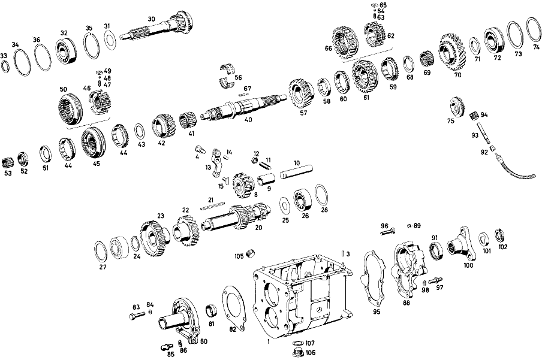

| № | Артикул | Название | Кол. | Примечание | Ограничение |
|---|---|---|---|---|---|
| 1 | A 111 260 02 11 | КОРПУС КП | 1 | Коробка передач | |
| 3 | N 000007 006205 | - Цилиндрический штифт | 2 | Коробка передач | |
| 4 | A 111 262 00 74 | - Палец | 1 | Коробка передач | |
| 8 | A 120 260 03 25 | Шестерня заднего хода | 1 | Коробка передач | |
| 9 | A 120 263 03 50 | - втулка | 1 | Коробка передач | |
| 10 | A 186 263 00 30 | Ось шестерни заднего хода | 1 | Коробка передач | |
| 11 | N 000417 010002 | THREADED PIN | 1 | с HARDENED BLUNT END Коробка передач | |
| 12 | N 000934 010005 | Гайка | 1 | Коробка передач | |
| 13 | A 136 260 00 37 | РЫЧАГ | 1 | Коробка передач | |
| 14 | N 900037 008104 | - Установочный штифт | 1 | Коробка передач | |
| 15 | A 121 263 01 23 | Скользящая муфта | 1 | для REVERSE IDLER GEAR Коробка передач | |
| 20 | A 110 263 09 02 | Промвал коробки передач | 1 | OPTIONAL Коробка передач | |
| 21 | A 186 991 03 68 | Призматическая шпонка | 1 | Коробка передач | |
| 22 | A 111 263 00 13 | Шестерня | 1 | 38 TEETH для THIRD SPEED Коробка передач | |
| 23 | A 111 263 00 10 | Шестерня | 1 | 43 TEETH для FOURTH SPEED Коробка передач | |
| 24 | N 900055 035300 | Стопорное кольцо | 1 | Коробка передач [402] БОЛЬШЕ НЕ ПОСТАВЛЯЕТСЯ | |
| 25 | A 186 990 18 40 | Диск | 1 | Коробка передач | |
| 26 | N 000625 036305 | Шарикоподшипник | 2 | Коробка передач | |
| 27 | A 120 263 16 52 | Дистанционная шайба | 1 | Коробка передач | |
| 28 | A 120 263 08 52 | Компенсационная шайба | NB | 1.00\-MM THICK OPTIONAL Коробка передач | |
| 30 | A 111 260 13 20 | Приводной вал | 1 | с SYNCHRONIZER CONE Коробка передач | |
| 31 | A 186 262 00 66 | Маслозащитное кольцо | 1 | Коробка передач | |
| 32 | N 000625 606306 | Шарикоподшипник | 1 | BEARING с COVER PLATE Коробка передач | |
| 33 | A 136 262 00 94 | Пруж. стопорное кольцо | 1 | Коробка передач | |
| 34 | A 186 262 04 51 | Проставочное кольцо | 1 | Коробка передач | |
| 40 | A 180 262 01 05 | Вторичный вал | 1 | Коробка передач | |
| 41 | A 001 981 68 10 | ПОДШИПНИК ИГОЛЬЧАТЫЙ | 1 | Коробка передач | |
| 42 | A 111 260 03 44 | Цил. косозубая шестерня | 1 | с SYNCHRONIZER CONE, 31 TEETH для THIRD SPEED Коробка передач | |
| 43 | A 120 262 23 62 | Упорная шайба | 1 | Коробка передач | |
| 44 | A 113 262 00 34 | Кольцо синхронизатора | 2 | Коробка передач | |
| 45 | A 111 260 08 45 | Корпус синхронизатора | 1 | для THIRD AND FOURTH SPEED Коробка передач | |
| 46 | A 111 262 04 35 | - Корпус синхронизатора | 1 | Коробка передач [417] БОЛЬШЕ НЕ ПОСТАВЛЯЕТСЯ, ЗАКАЗЫВАТЬ КОМПЛЕКТ ПОСТАВКИ | |
| 47 | A 180 993 41 01 | - пружина | 3 | Коробка передач | |
| 48 | N 005401 306500 | - Шар | 3 | 6.5mm Коробка передач | |
| 49 | A 121 262 00 40 | - Поводок | 3 | Коробка передач | |
| 50 | A 111 262 04 23 | - СКОЛЬЗ. МУФТА СИНХРОНИЗ. | 1 | Коробка передач | |
| 51 | A 120 994 01 15 | Стопорная шайба | 1 | Коробка передач | |
| 52 | A 120 262 03 26 | Шлицевая гайка | 1 | Коробка передач | |
| 53 | A 000 981 08 12 | СЕПАРАТОР ИГОЛЬЧ. ПОДШ. | 1 | BY MESSRS. KLING OPTIONAL Коробка передач | |
| 56 | A 120 981 03 12 | Сепаратор роликоподш. | 1 | Коробка передач | |
| 57 | A 110 262 04 12 | ШЕСТЕРНЯ | 1 | OPTIONAL для SECOND SPEED Коробка передач | |
| 58 | A 120 262 16 62 | ШАЙБА УПОРНАЯ | 1 | 7.90\-MM THICK OPTIONAL Коробка передач | |
| 59 | A 111 262 00 34 | SYNCHRONIZER RING | 1 | для FIRST SPEED Коробка передач | |
| 60 | A 111 262 01 34 | КОЛЬЦО СИНХРОНИЗАТОРА | 1 | для SECOND SPEED Коробка передач | |
| 61 | A 111 260 09 45 | Корпус синхронизатора | 1 | для FIRST AND SECOND SPEED Коробка передач | |
| 62 | A 111 262 06 35 | - СИНХРОНИЗАТОР | 1 | Коробка передач [402] БОЛЬШЕ НЕ ПОСТАВЛЯЕТСЯ | |
| 63 | A 180 993 41 01 | - пружина | 3 | Коробка передач | |
| 64 | N 005401 306500 | - Шар | 3 | 6.5mm Коробка передач | |
| 65 | A 121 262 00 40 | - Поводок | 3 | Коробка передач | |
| 66 | A 111 262 06 23 | - СКОЛЬЗ. МУФТА СИНХРОНИЗ. | 1 | Коробка передач [402] БОЛЬШЕ НЕ ПОСТАВЛЯЕТСЯ | |
| 67 | A 120 262 00 81 | Вставной клин | 1 | Коробка передач | |
| 69 | A 001 981 69 10 | Игольчатый подшипник | 1 | Коробка передач | |
| 70 | A 110 262 03 11 | ШЕСТЕРНЯ | 1 | для FIRST SPEED Коробка передач | |
| 71 | A 186 262 01 62 | Упорная шайба | NB | 3.80\-MM THICK OPTIONAL Коробка передач | |
| 72 | A 136 981 02 25 | ШАРИКОПОДШИПНИК | 1 | Коробка передач | |
| 73 | N 005417 072000 | Пруж. стопорное кольцо | 1 | Коробка передач | |
| 74 | A 136 262 04 52 | Компенсационная шайба | NB | 0.10\-MM THICK OPTIONAL Коробка передач | |
| 75 | A 110 264 00 30 | Ведущее колесо | 1 | Коробка передач | |
| 80 | A 112 260 04 21 | КРЫШКА КОРПУСА | 1 | COVER, FRONT Коробка передач | |
| 81 | A 186 261 00 60 | - Уплотнительное кольцо | 1 | Коробка передач | |
| 82 | A 112 261 00 79 | Уплотнительная прокладка | 1 | TRANSMISSION CASE COVER TO TRANSMISSION CASE Коробка передач | |
| 83 | N 000931 008046 | Винт | 3 | TRANSMISSION CASE COVER TO TRANSMISSION CASE Коробка передач | |
| 84 | N 000137 008202 | Пружинная шайба | 4 | TRANSMISSION CASE COVER TO TRANSMISSION CASE Коробка передач | |
| 85 | A 112 991 01 15 | ЦАПФА СФЕРИЧЕСКАЯ | 1 | TRANSMISSION CASE COVER TO TRANSMISSION CASE Коробка передач | |
| 86 | N 000137 010200 | Пружинная шайба | 1 | TRANSMISSION CASE COVER TO TRANSMISSION CASE Коробка передач | |
| 88 | A 111 260 04 16 | Крышка корпуса | 1 | COVER, REAR Коробка передач | |
| 89 | A 153 264 00 55 | - Пробка | 1 | Коробка передач | |
| 91 | A 000 997 17 46 | УПЛОТНИТ. КОЛЬЦО | 1 | Коробка передач | |
| 92 | A 120 261 00 80 | Приклеивающаяся табличка | 1 | для SPEEDOMETER DRIVE Коробка передач | |
| 93 | A 111 264 00 32 | Вал | 1 | для SPEEDOMETER DRIVE Коробка передач | |
| 94 | A 120 264 02 31 | Ведущее колесо | 1 | для SPEEDOMETER DRIVE Коробка передач | |
| 95 | A 111 261 00 79 | Уплотнительная прокладка | 1 | Коробка передач | |
| 96 | N 000931 008046 | Винт | 3 | Коробка передач | |
| 97 | A 110 990 00 10 | БОЛТ | 4 | Коробка передач | |
| 98 | N 000137 008202 | Пружинная шайба | 7 | Коробка передач | |
| 100 | A 111 262 00 45 | Фланец | 1 | Коробка передач | |
| 101 | A 186 262 01 73 | предохранитель | 1 | Коробка передач | |
| 102 | A 186 262 02 26 | Шлицевая гайка | 1 | Коробка передач | |
| 105 | A 186 997 00 32 | ЗАГЛУШКА РЕЗЬБОВАЯ | 1 | M24X1,5 Коробка передач | |
| 106 | A 186 997 01 32 | ЗАГЛУШКА РЕЗЬБОВАЯ | 1 | Коробка передач | |
| 107 | N 007603 024100 | УПЛОТНИТ. КОЛЬЦО | 1 | Коробка передач | |
| A 112 260 14 04 | КОРОБКА ПЕРЕДАЧ | 1 | Коробка передач | ||
| A 110 263 06 02 | COUNTERSHAFT | 1 | Коробка передач | ||
| A 111 263 04 02 | ПРОМЕЖУТОЧНЫЙ ВАЛ | 1 | Коробка передач | ||
| A 111 263 05 02 | ПРОМЕЖУТОЧНЫЙ ВАЛ | 1 | OPTIONAL Коробка передач | ||
| A 180 263 04 10 | ШЕСТЕРНЯ | 1 | 45 TEETH для FOURTH SPEED Коробка передач | ||
| A 120 263 14 52 | Компенсационная шайба | NB | 0.10\-MM THICK OPTIONAL Коробка передач | ||
| A 120 263 15 52 | РАСПОРНАЯ ШАЙБА | NB | 0.25\-MM THICK OPTIONAL Коробка передач | ||
| A 120 263 16 52 | Дистанционная шайба | NB | 0.50\-MM THICK OPTIONAL Коробка передач | ||
| A 112 260 05 20 | ПРИВОДНОЙ ВАЛ | 1 | с SYNCHRONIZER CONE Коробка передач | ||
| A 136 994 09 35 | Пруж. стопорное кольцо | 1 | OPTIONAL Коробка передач | ||
| A 136 262 07 52 | Компенсационная шайба | NB | 0.20\-MM THICK OPTIONAL Коробка передач | ||
| A 000 981 09 12 | СЕПАРАТОР ИГОЛЬЧ. ПОДШ. | 1 | BY MESSRS. SCHAEFFLER OPTIONAL Коробка передач | ||
| A 000 981 37 12 | СЕПАРАТОР ИГОЛЬЧ. ПОДШ. | 1 | BY MESSRS. DÜRKOPP OPTIONAL Коробка передач | ||
| A 000 981 63 12 | СЕПАРАТОР ИГОЛЬЧ. ПОДШ. | 1 | BY MESSRS. SCHAEFFLER OPTIONAL Коробка передач | ||
| A 110 262 02 12 | ШЕСТЕРНЯ | 1 | Коробка передач | ||
| A 111 262 06 12 | ШЕСТЕРНЯ | 1 | OPTIONAL для SECOND SPEED Коробка передач | ||
| A 120 262 18 62 | ШАЙБА УПОРНАЯ | 1 | 8.00\-MM THICK OPTIONAL Коробка передач | ||
| A 120 262 20 62 | Упорная шайба | 1 | 8.10\-MM THICK OPTIONAL Коробка передач | ||
| A 111 260 07 45 | СИНХРОНИЗАТОР | 1 | для FIRST AND SECOND SPEED Коробка передач | ||
| A 111 262 03 35 | - СИНХРОНИЗАТОР | 1 | Коробка передач | ||
| A 111 262 03 23 | - СКОЛЬЗ. МУФТА СИНХРОНИЗ. | 1 | Коробка передач [417] БОЛЬШЕ НЕ ПОСТАВЛЯЕТСЯ, ЗАКАЗЫВАТЬ КОМПЛЕКТ ПОСТАВКИ | ||
| A 120 262 13 62 | Упорная шайба | 1 | 4.50\-MM THICK OPTIONAL Коробка передач | ||
| A 110 262 01 11 | ШЕСТЕРНЯ | 1 | Коробка передач | ||
| A 113 262 01 11 | ШЕСТЕРНЯ | 1 | Коробка передач | ||
| A 186 262 02 62 | Упорная шайба | NB | 3.90\-MM THICK OPTIONAL Коробка передач | ||
| A 186 262 03 62 | Упорная шайба | NB | 4.00\-MM THICK OPTIONAL Коробка передач | ||
| A 186 262 04 62 | ШАЙБА УПОРНАЯ | NB | 4.10\-MM THICK OPTIONAL Коробка передач | ||
| A 186 262 05 62 | Упорная шайба | NB | 4.20\-MM THICK OPTIONAL Коробка передач | ||
| A 186 262 06 62 | ШАЙБА УПОРНАЯ | NB | 4.30\-MM THICK OPTIONAL Коробка передач | ||
| A 186 262 07 62 | Упорная шайба | NB | 4.40\-MM THICK OPTIONAL Коробка передач | ||
| A 186 262 08 62 | Упорная шайба | NB | 4.50\-MM THICK OPTIONAL Коробка передач | ||
| A 136 262 05 52 | Компенсационная шайба | NB | 0.20\-MM THICK OPTIONAL Коробка передач | ||
| A 136 262 09 52 | Компенсационная шайба | NB | 0.30\-MM THICK OPTIONAL Коробка передач | ||
| A 112 260 03 21 | AIR FILTER HOUSING COVER | 1 | COVER, FRONT Коробка передач | ||
| A 111 261 02 79 | ПРОКЛАДКА УПЛОТНИТЕЛЬНАЯ | 1 | TRANSMISSION CASE COVER TO TRANSMISSION CASE Коробка передач | ||
| N 000931 008171 | БОЛТ | 1 | TRANSMISSION CASE COVER TO TRANSMISSION CASE Коробка передач | ||
| N 000931 006083 | БОЛТ | 1 | FLEXIBLE SHAFT TO REAR TRANSMISSION CASE COVER Коробка передач | ||
| N 000137 006200 | Пружинная шайба | 1 | FLEXIBLE SHAFT TO REAR TRANSMISSION CASE COVER Коробка передач | ||
| N 000931 010093 | Винт | 2 | TRANSMISSION с CLUTCH TO CYLINDER CRANKCASE Коробка передач | ||
| N 000137 010200 | Пружинная шайба | 2 | TRANSMISSION с CLUTCH TO CYLINDER CRANKCASE Коробка передач | ||
| N 000931 010093 | Винт | 1 | TRANSMISSION с CLUTCH TO INTERMEDIATE FLANGE Коробка передач | ||
| N 000125 010500 | ШАЙБА | 1 | TRANSMISSION с CLUTCH TO INTERMEDIATE FLANGE Коробка передач | ||
| N 000912 010022 | БОЛТ | 2 | TRANSMISSION с CLUTCH TO OIL PAN, ENGINE Коробка передач | ||
| N 000137 010200 | Пружинная шайба | 2 | TRANSMISSION с CLUTCH TO OIL PAN, ENGINE Коробка передач | ||
| N 000934 010000 | Гайка | 2 | TRANSMISSION с CLUTCH TO OIL PAN, ENGINE Коробка передач |
Позиций: 126 · подписано на схемах: 81 · колесо — плавный зум в курсор, перетаскивание — пан, двойной клик — зум, клик по артикулу — скопировать.